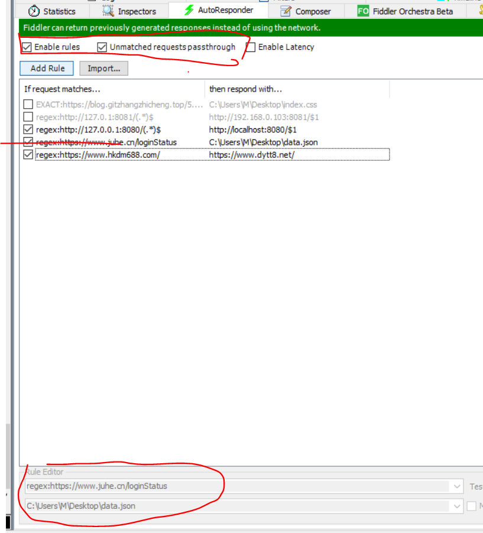
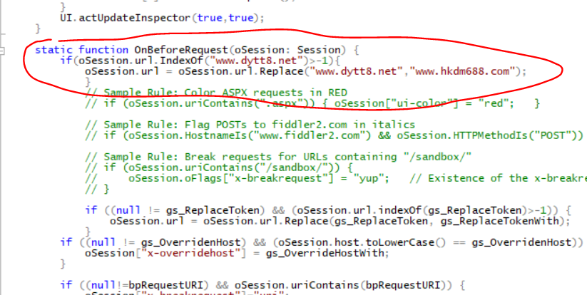
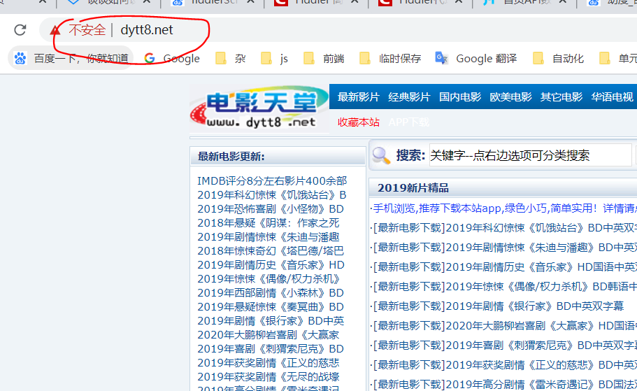
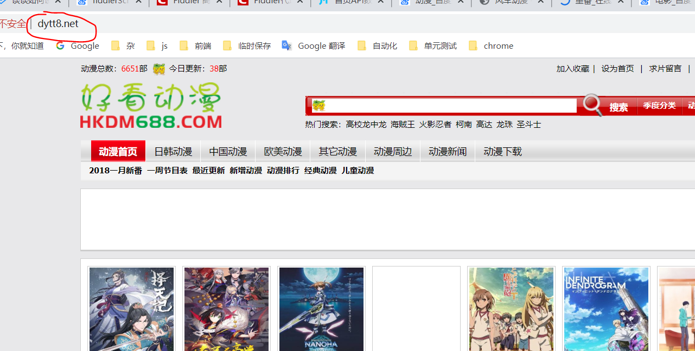

请求转发到本地文件
身为一名前端，当为了调试某些情况下请求的返回参数需要人为改动来调试时，可以使用 AutoResponder
如:

本地转发
配置规则为
1 | regex:https://www.juhe.cn/loginStatus |
带 regex:为正则匹配，否则就是完全匹配。
使用 fiddlerScript 代理
fiddlerScript 时 js 代码，灵活度比较高。
我们只要操作 oSession 对象即可
首先我们现在请求前OnBeforeRequest方法添加要修改的地址。
如:
1 | // 电影天堂替换为动漫 |

1

1

1
当我们请求www.dytt8.net地址时就会替换为www.hkdm688.com然后再做真正的请求。
而 fiddlerScript 的OnBeforeRequest是优先于 AutoResponder 的，所以我们在 fiddlerScript 修改的，可以在 AutoResponder 再次调整。